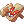
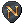

Summer Festival
Are you ready for the summer heat? The summer fun has just begun!
Step into our summer paradise and wander around, bask in the sun and explore this fantastic resort.
You might find some familiar faces, hidden treasures or even new activities to take part in!

To join in on the event, talk to the Festival Ferryman in Summer Island during the open hours and hop on for a ride to the Festival Island! @go 53
Once there, you can meet the main event organizer, the Festival King at , who is also in charge of distributing rewards in exchange for Summer Festival Coins and cleaning up after every festival.
The NovaRO Summer Festival is open every four hours for the duration of one hour.
You can check the opening times via @events command in-game.
| Summer Festival Opening Times (Server Time - PST) | ||||
|---|---|---|---|---|
| Time | End Activity on EVEN days | End Activity on ODD days | ||
| 0:00 - 1:00 | Fishing Tournament | Summer Concert | ||
| 4:00 - 5:00 | Summer Concert | Fishing Tournament | ||
| 8:00 - 9:00 | Fishing Tournament | Summer Concert | ||
| 12:00 - 13:00 | Summer Concert | Fishing Tournament | ||
| 16:00 - 17:00 | Fishing Tournament | Summer Concert | ||
| 20:00 - 21:00 | Summer Concert | Fishing Tournament | ||
See also: Fishing Tournament, Summer Concert
Sally - Summer weeklies
Sally can be found in the Summer Resort . She will allow you to take the specific summer weekly quests (independant of the regular weeklies given by Valerie in Main Office).
| Quest | Reward |
|---|---|
| Summer Festival Attendance: Complete 3 sets of Summer Dailies OR kill 500 monsters inside the King's Grotto. | 5  Endeavor Tokens Endeavor Tokens
|
| Festival Games: Play 25 Multiplayer Games | 500  Summer Festival Coins Summer Festival Coins
|
Summer Tablet
When you arrive at Festival Island, a  Summer Tablet magically appears in your inventory!
Summer Tablet magically appears in your inventory!
The tablet has tons of convenient features and exclusive upgrades, such as giving directions, fast travel,  Festival Sandals, and more.
Main article: Summer Tablet
Summer Festival Coins
The inhabitants of Summer Festival Island trade in a special Summer Festival Coins currency that is only available on the island.
These coins are widely obtainable and can be exchanged for items, upgrades and experiences.
To help you get started, you will be rewarded with a stack of coins upon your first arrival.
Use these coins to familiarize yourself with the available mini-games and have fun!
Obtaining Summer Festival Coins
You can obtain Summer Festival Coins from the following:
- First time arrivals will be rewarded with a stack of Coins
- Participating in mini games on the Summer Island
- Digging on the Summer Island and King's Grotto
- Foraging on the Summer Island and King's Grotto
- Participating in the Fishing Tournament
- Killing Monsters in the King's Grotto
- Opening Chests in the King's Grotto
- Buried Treasure automated event
- Completing Summer Festival Daily quests on the Frying Dutchman
- Completing Summer Festival Achievements
- Exchanging Rainbow Gemstones with the Festival Painter (20 Coins per Gemstone)
- Exchanging Deep Water Pearls with the Diving Enthusiast (75 Coins per Pearl)
- Exchanging Crushed Cans with the Festival King (5 Coins per Can)
Spending Summer Festival Coins
You can spend Summer Festival Coins doing the following:
- Entering the King's Grotto
- Upgrading your Wetsuit
- Completing the Hooligan quest
- Paying the entry cost for some games
- Purchasing bait during the Fishing Tournament
- Upgrading your Fishing Rod
- Recoloring Festival Hats at the Festival Painter
- Upgrading your Shovel
- Purchasing goods from Summer Shops
Mini-games
On Festival Island, there is a variety of mini-games you can play to earn coins and have fun!
Mini-games are found throughout the island and can be displayed on the mini-map by using your Summer Tablet.
If you win, you will earn Summer Festival Coins. Your reward is doubled if the game is featured in a Bonus Frenzy.
| Mini-games | ||
|---|---|---|
| Singleplayer | Multiplayer | Arcade |
| Poring Patterns | Shellfish Shuck | Plushie Claw |
| Poring Stacker | Voltz Clicker | Monster Trivia |
| Dice Challenger | Dodgebomb | Number Wizard |
| Crystal Chaos | Poolside Panic | Patch Notes Parser |
| Grand Master | Seaside Shuffle | Monster Mash |
| Countdown | ||
| Poring Matcher | ||
See also: Singleplayer Games, Multiplayer Games, Arcade Games
Digging

While on Festival Island, dig sites will appear randomly around the island.
If you have a shovel in your inventory, you will be able to dig up items from these dig sites.
You can speak to Harry, the Excavation Expert, located at , to get your first  Iron Shovel for 5 Summer Festival Coins.
Iron Shovel for 5 Summer Festival Coins.
Digging Frenzy
During the festival, there is a chance for a Digging Frenzy to occur. This causes digsites to spawn at a higher rate around the island and in King's Grotto.
During this time, digging will also yield double the amount of Summer Festival Coins.
Main article: Digging
Exclusive Hats Quests
These quests are only able to be completed while the event is active.
| Image | Name | Slot | Ingredients | Location | NPC |
|---|---|---|---|---|---|
| Festival Pride | Upper |
|

|
Elena | |
| Hibiscus | Upper |
|

|

Aria | |
| Seppl Hat | Costume, Upper |
|
|
Nelloz |


Pouring Keys
 Pouring Keys are an item that can be obtained from various games and activities around the island.
Pouring Keys are an item that can be obtained from various games and activities around the island.
These keys allow players to open locked chests that can be found scattered around the King's Grotto.
Recycling Hats for Keys
Hats can be found on Summer Festival island by doing various activities.
You can speak to Mallory at and recycle these hats for Pouring Keys with a 1:1 rate:
(Please note only their base versions can be recycled, not the recolored versions)


Summer Raffle
There will be a Raffle every time the Summer Festival opens!
Everyone who enters Festival Island will automatically be entered into the raffle.
You can purchase 20 additional entries for 1250 Summer Festival Coins from the Raffle Ticket Seller at .
Winners receive a Summer Glow hat and the exclusive Radiant Glow title!
Titles and Achievements
| Title | Required Achievement | Condition |
|---|---|---|
| Golden | Golden Touch | Receive a golden hat from the Festival Painter. |
| King Midas | Embellished | Obtain all Series I Golden/Rare Hats from the Festival Painter. |
| El Dorado | To Xibalba | Obtain all Series II Golden/Rare Hats from the Festival Painter. |
| Gilded Collector | Gilded | Obtain all Series III Golden/Rare Hats from the Festival Painter. |
| Certified Diver | Diver Training | Obtain all diving equipment upgrades from the King's Grotto. |
| Finders Keepers | Salvage Master | Open 100 treasure chests in the King's Grotto. |
| Demolition Expert | Bomb Squad IV | Win Dodge Bomb 50 times. |
| Iron Lung | Steadfast IV | Win Poolside Panic 50 times. |
| Fleetfooted | Fast-Track IV | Win Seaside Shuffle 50 times. |
| Dexterous | Nimble Hands IV | Win Voltz Clicker 50 times. |
| What The Shell | What The Shuck IV | Win Shellfish Shuck 50 times. |
| King Slayer | Overthrown III | Kill the Pouring King 25 times. |
| Culinary Expert | Festival Attendee | Obtain all 4 Summer Daily Shop hats. Clay Poring Jar [L], Clay Poring Jar [L],  Bubbles [L], Bubbles [L], Blue Eremes Scarf , Blue Eremes Scarf , Blessing Sky Lantern [L] Blessing Sky Lantern [L]
|
| Radiant Glow | Lucky Summer | Win the Summer Raffle. |
| Herbivore | Festival Forage | Forage 100 times. |
| Ground Breaking | Groundbreaking Festival | Dig 100 times. |
| Angler | Festival Angler | Fish 100 times. |
| Hype | Bring The Noise | Attend Summer Concert 25 times. |
| Snack Monster | Om nom nom nom | Cook 100 meals. |
| Moshed and Found | Mosh-star I | Achieve Rock On! once. |
| Hyperbeast | Mosh-star IV | Achieve Rock On! 20 times. |
| Vibin | Mosh It Out II | Achieve Great! 5 times. |
| Moshterpiece | Mosh It Out V | Achieve Great! 50 times. |
| Resplendent | Resplendent | Obtain all Series V Golden/Rare Hats from the Festival Painter. |
| OU OU OU OU OU O UOU | Quit Monkeying Around! | Kill 500 Toto's. |
| Bloop Bloop | Splish Splish You're Dead! | Kill 500 Cave Fish. |
| Asterwoahza | Asterozoa more like Asterwoahza! | Kill 1500 Asterozoa's in the Summer Grotto. |
| Swish Swash | Swish Swash! | Kill 1500 Swashbuckler in the Summer Grotto. |
| Drawgr | Drawwwwwwwgr! | Kill 1500 Sea Draugr in the Summer Grotto. |
| Cross Gripper Slash | Cross Gripper Slash! | Kill 1500 Gripper in the Summer Grotto. |
Summer Shops
You can purchase a wide variety of items using Summer Festival Coins and  Guitar Picks.
Main article: Summer Shops
See Also
| Summer Festival | ||
|---|---|---|
| General | Frying Dutchman • King's Grotto • Summer Concert • Hooligan • Summer Tablet • Festival Hat Recolors • Summer Shops | |
| Games | Multiplayer Games • Singleplayer Games • Arcade Games • Frenzy Mode | |
| Activities | Digging • Fishing Tournament • Summer Foraging • Summer Cooking | |